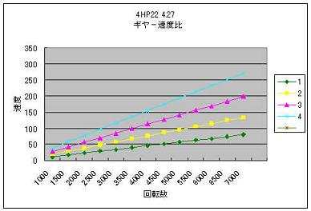
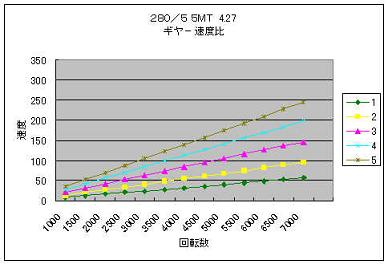
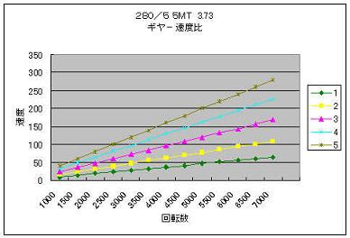

2009/3/28～2009/5/17 ギア比の見直しとLSD
ＭＴに載せ換えてローギア化してしまったので、ギア比の見直しをしました。
ATの頃のファイナルドライブギア比は4.27 しかし、このギア比でMTだと5速 3000回転で100km/hちょっと。
踏むと6000回転 200km/hちょっとで吹け切ってしまう。
燃費も気になるし、高速ではエンジンが唸ってうるさいのだ。
そんなことから、ギア比の変更をすることに＾＾
そこで、4.27からどのギア比に変更するかが問題に。。ＭＴ仕様の535Iでは、3.64辺りが標準装備となるようだ。
「じゃあ3.64でいいのでは？」なんて考えるも・・・
載せ換えたＭＴは、Ｍ５用のGetrag 280/5 535I用のGetrag260/6と若干ギア比が違うのだ。（260/6のほうが280/5より1～3速がローギア）
| 1速 | 2速 | 3速 | 4速 | 5速 |
| ZF 4HP22 | 2.48 | 1.48 | 1.00 | 0.73 | N/A |
| GETRAG 280/5 | 3.15 | 2.08 | 1.35 | 1.00 | 0.81 |
| GETRAG 260/6 | 3.83 | 2.20 | 1.40 | 1.00 | 0.81 |
更に、ファイナルギアが3.64のデフなんてなかなか手に入りそうも無い。。
そこで、いろいろ調べていくと3.64よりローギアになるが、E30 325I用に3.73があることが判明した。
260/6より280/5のほうが少しハイギアだし、M5より非力な535iには良いのでは？という考えと・・・
E30 325Iのデフには純正LSDも入っている！
E30のデフとE34のMサイズデフは互換性があり、中身の組み換えが可能なのだ。他にもE36やM3C（M3BとMクーペはダメ）のデフとギアが流用可能なようだ。
ということで、325I用のデフを探すことに。
探してみると、タイミング良く見つかった＾＾ 左がE34 525I用のノーマルデフ 右がE30 325I用の3.73 LSD E34用のデフケースにE30のファイナルギアとLSDを組むのだ。 |
オイルシールやガスケット類を用意して･･･組み換えです。 といっても、DIYで出来そうにないので。。 ショップにお願いしました。 |
組みあがってきたギアケース＾＾ 言わずとも綺麗に仕上げてくれるところが嬉しい。 ショップの趣味？でフランジが青く塗られている。これはちょっと・・・（笑 |
デフカバーのボルトに、ギア比の刻印されたタグプレートが共締めされている。 リングギアの歯数41、ピニオンギアの歯数11で41÷11=3.7272・・・≒3.73というわけだ。 |
?@ ZF 4HP22 ファイナル4.27  | 4HP22 4.27 | 1速 | 2速 | 3速 | 4速 | | 1000rpm | 11.3 | 19.0 | 28.2 | 38.7 | | 1500rpm | 17.0 | 28.6 | 42.3 | 58.0 | | 2000rpm | 22.7 | 38.1 | 56.5 | 77.4 | | 2500rpm | 28.4 | 47.7 | 70.6 | 96.7 | | 3000rpm | 34.1 | 57.2 | 84.7 | 116.1 | | 3500rpm | 39.8 | 66.8 | 98.8 | 135.4 | | 4000rpm | 45.5 | 76.3 | 113.0 | 154.8 | | 4500rpm | 51.2 | 85.0 | 127.1 | 174.1 | | 5000rpm | 56.9 | 95.4 | 141.2 | 193.5 | | 5500rpm | 62.6 | 104.9 | 155.3 | 212.8 | | 6000rpm | 68.3 | 114.5 | 169.5 | 232.2 | | 6500rpm | 74.0 | 124.0 | 183.6 | 251.5 | | 7000rpm | 79.7 | 133.6 | 197.7 | 270.9km/h |
目安として、3000回転時とレブリミットである6500回転時を拾ってみる。
4速3000回転で116.1km/h 4速6500回転で251.1km/h これが本来の適正な回転数と速度 |
| ?A GETRAG 280/5 ファイナル4.27  | 280/5 4.27 | 1速 | 2速 | 3速 | 4速 | 5速 | | 1000rpm | 8.0 | 13.5 | 20.9 | 28.2 | 34.8 | | 1500rpm | 12.0 | 20.3 | 31.3 | 42.3 | 52.3 | | 2000rpm | 16.0 | 27.1 | 41.8 | 56.5 | 69.7 | | 2500rpm | 20.1 | 33.9 | 52.3 | 70.6 | 87.1 | | 3000rpm | 24.1 | 40.7 | 62.7 | 84.7 | 104.6 | | 3500rpm | 28.1 | 47.5 | 73.2 | 98.8 | 122.0 | | 4000rpm | 32.1 | 54.3 | 83.7 | 113.0 | 139.5 | | 4500rpm | 36.2 | 61.1 | 94.1 | 127.1 | 156.9 | | 5000rpm | 40.2 | 67.9 | 104.6 | 141.2 | 174.3 | | 5500rpm | 44.2 | 74.7 | 115.1 | 155.3 | 191.8 | | 6000rpm | 48.2 | 81.9 | 125.5 | 169.5 | 209.2 | | 6500rpm | 52.3 | 88.2 | 136.0 | 183.6 | 226.7 | | 7000rpm | 56.3 | 95.0 | 146.4 | 197.7 | 244.1 km/h |
5速3000回転で104km/h･････?@との差－12km/h 5速6500回転で226.7kn/h･････?@との差－25km/h ATの頃の回転数と速度から見ると、ローギアになったことがわかる。 派手にクラッチを繋ぐと2速でもホイールスピンするほどだった。 |
| ?B GETRAG 280/5 ファイナル3.73  | 280/5 3.73 | 1速 | 2速 | 3速 | 4速 | 5速 | | 1000rpm | 9.2 | 15.5 | 23.9 | 32.3 | 39.9 | | 1500rpm | 13.8 | 23.3 | 35.9 | 48.5 | 59.8 | | 2000rpm | 18.4 | 31.0 | 47.9 | 64.6 | 79.8 | | 2500rpm | 23.0 | 38.8 | 59.8 | 80.5 | 99.8 | | 3000rpm | 27.6 | 46.6 | 71.8 | 97.0 | 119.7 | | 3500rpm | 32.2 | 54.4 | 83.8 | 113.1 | 139.7 | | 4000rpm | 36.8 | 62.1 | 95.8 | 129.3 | 159.7 | | 4500rpm | 41.4 | 69.9 | 107.8 | 145.5 | 179.6 | | 5000rpm | 46.0 | 77.7 | 119.7 | 161.7 | 199.6 | | 5500rpm | 50.6 | 85.5 | 131.7 | 177.8 | 219.6 | | 6000rpm | 55.2 | 93.2 | 143.7 | 194.0 | 239.5 | | 6500rpm | 59.8 | 101.0 | 155.7 | 210.2 | 259.5 | | 7000rpm | 69.1 | 108.8 | 167.7 | 226.3 | 279.5 km/h |
5速3000回転で119.7km/h･････?@との差＋3km/h 5速6500回転で259.5kn/h･････?@との差＋8km/h ?Aと?Bの速度の差から?@にあるATの頃のギア比に近づいたことが分かる。 3.73よりもう１つローギアの3.91であれば、約4%のローギア比となり3000回転で114.2km/h 6500回転で247.5km/hとなり、もっとATの頃のギア比に近づけれた。 |
4.27が入った降ろしたデフケース。なぜサイドフランジが青いかというと・・・ 組んでもらったデフケースは525iの物、535iにはサイドフランジが合わず再利用した。 ってことは、同じMサイズデフでも525と535はドライブシャフトも違うのだろうか？！ ちなみに、535iにはMサイズデフとLサイズデフ搭載のモデルがある。 ディーラー車にはMサイズデフの場合が多いようだ。 |
ノーマルの4.27から約12％高い3.73へ交換したことにより、息の長い加速と上に記載したように適正な回転数となり、 高速道路では快適になった。 加速が犠牲になるかと思ったが、気になるほどの落ち込みはなかった＾＾ LSDを入れたことにより、高速道路などでトラックの横を通過した時に「フワッ」となるアレが かなり軽減された。 横風の影響も以前より少なくなり、安定性が増したように思う。 今回も、ＳＩＧさんにファイナルギアの選択についてアドバイスをいただいたm(__)m |